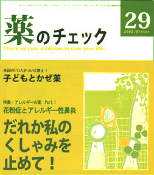

No.29 特集 アレルギーの薬 PART1 花粉症とアレルギ―性鼻炎 2008年1月 発行
またこの季節が来てしまった。
毎年毎年、いやになる。いったい何なのよ、これ。くしゃみ・鼻水・鼻づまり、涙も出てくるし、あげくのはてに頭痛や発熱まで起きてくる。
本当なら仕事も学校も休んで、どこか症状の出ないところに逃げていたいけど、そうもいかないこのつらさ。
でも、ぼやいていても仕方がない。とりあえず医者にかかって薬をもらって、とにかく、この洪水のような症状をなんとかしたい！
頼るべきものは薬しかない！？
と言いつついつも思うんだけど・・・この薬、こんなに飲んで大丈夫？
（絶版）
もくじ
特集 アレルギーの薬 PART1 花粉症とアレルギー性鼻炎
■まあええか、で辛抱しています―患者に聞く ―編集部
■花粉症・アレルギー性鼻炎って、いったい何？―浜さんに聞く
■医者もなります花粉症 −木元康介
■花粉症の治療は対症療法 ―浜さんに聞く
■薬でアレルギー体質は変わらない！（薬の評価）―浜六郎
リスト：花粉症・アレルギー性鼻炎に使われる薬剤の適応症と評価
■こういう考え方でいこう！（まとめ）―浜六郎
連載
■映画のなかのクスリ（２２） SSRI ―木元康介
■みんなのやさしい生命倫理 ２９
EBMの生命倫理（８） ―谷田憲俊
■EBM超入門 DIPEｘ誕生の意義 ―別府宏圀
■市民の視点（１２） 混合診療を議論する前に ―勝村久司
■リレーエッセイ いいお医者さんとは ―春本幸子
提言
■タミフル突然死の因果関係を早急に認めよ ―浜六郎
■タミフル脳症被害者の会要望書
第2特集 子どもとかぜ薬
■米国FDAが子ども用かぜ市販薬の禁止を勧告 ―編集部
■子どもを医師にどう診せる? 母親に聞く ―編集部
■かぜの子どもをどう診察・治療するか ―入江紀夫医師に聞く
■かぜ薬は日本でも禁止すべき ―浜六郎
表：かぜ薬に使われている抗ヒスタミン剤の小児への規制状況
その他
■海外情報
■行ってきました
１．安心できる産科医療 ２．アトピーフォーラム
■コーヒー無礼区
■読者の声
■質問箱 １ にきび肌にもオイルクレンジングで？
２ 高い薬価は何とかならないか？
３ ワーファリンなどの薬の副作用では？
■もにたらんど／質問箱番外編 読者モニターからの質問
■新コーナー・コトバのお勉強 「ランダム化比較試験」
■書評
『丸腰のボランティア』／『医療の限界』／『インフルエンザワクチンは打たないで！』
■イベント情報
■用語の解説
第２特集 子どもとかぜ薬 より
かぜ薬は日本でも禁止すべき ―浜六郎
市販かぜ薬は６歳未満の小児にはだめ
米食品医薬品局（FDA）小児医療諮問委員会は2007年10月19日、咳止めや鼻水止めを含む市販のかぜ薬を、６歳未満の小児に使うべきではないと勧告した。
本誌はこれまでにも、解熱剤、鼻水止め、抗ヒスタミン剤、痰きり（去痰剤）、テオフィリン剤など、かぜに安易に使われている薬剤の危険性についてたびたび警告してきた。
日本では遅々として規制が進まないが、今回の米国における勧告は画期的と考える。
米国における規制に至る経過とその意味、日本における問題点について考え、提言したい。
（以下、引用省略）
詳しくは本誌で。
（絶版）